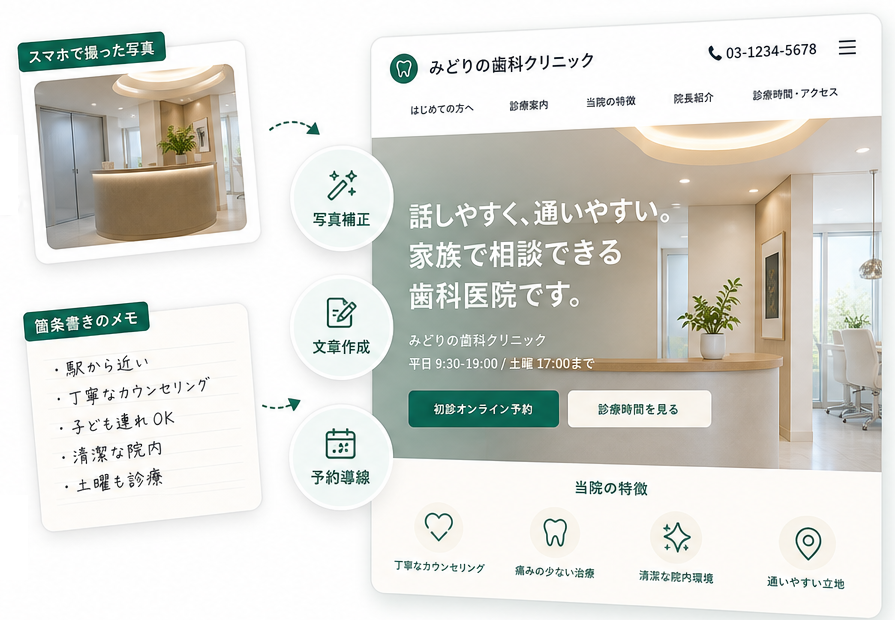

まずは名刺代わりに
Mini LP
30,000円〜
1ページでお店の魅力をわかりやすく伝えたい方向けのプランです。スマホ写真と箇条書き情報からでも始められます。
- 1ページLP
- 5セクションまで
- スマホ対応
- 支給情報の整理/基本コピー作成
- スマホ写真の簡易補正
- お問い合わせ/予約ボタンの設置
素材不足でも進められる店舗Web制作
スマホ写真と箇条書きから、プロが構成を整え、予約・来店につながるWebサイトを制作します。

シシノテができること
Webサイト制作における、「写真がない」「文章が書けない」「何を載せればいいかわからない」という準備段階からお手伝いします。
スマホ写真の補正、Web向けの切り出し、必要な写真の撮り方、原稿作成まで全てお任せください。
暗さ、傾き、余計な写り込み、画角の不足を整え、ファーストビューやメニュー紹介で使いやすい写真に調整します。
店外、店内、スタッフ、メニューなど、何をどの角度で撮ればよいかをチェックリスト化します。
箇条書きの情報やヒアリング回答から、見出し、本文、FAQ、予約ボタンまわりの文言を作成します。
実物写真が必要な箇所は正確性を優先し、背景・雰囲気・バナーなどはフリー素材や生成画像も組み合わせます。
※実在しない設備・商品・施術結果をあるように見せる加工は行いません。お店の実態が正しく伝わる範囲で整えます。
ご利用の流れ
現状サイト、SNS、Googleマップ、予約しやすさを確認し、改善ポイントをわかりやすく整理してお伝えします。
誰に何を伝えるかを整理し、ページ構成やお問い合わせ・予約ボタンの配置、写真や文章の準備方法を決めます。
スマホ写真や箇条書き情報をWeb向けに整え、文章・写真・予約導線を確認しながら制作します。
公開後の軽微修正と、次に見直すとよいポイントをご提案します。
シシノテの強み
料金プラン
料金は目安です。ページ数、セクション数、写真・文章の準備状況、CMS対応の有無に応じてお見積もりします。
ファーストビュー、選ばれる理由、メニュー/料金、ギャラリー、FAQ、アクセスなど、1つの目的を持った情報のまとまりです。1ページ内に内容を詰め込みすぎないよう、プランごとに上限を決めています。
まずは名刺代わりに
30,000円〜
1ページでお店の魅力をわかりやすく伝えたい方向けのプランです。スマホ写真と箇条書き情報からでも始められます。
おすすめ
100,000円〜
メニューやアクセス、よくある質問なども含めて、お店の情報と素材をしっかり整えたい方向けのプランです。
集客施策まで
150,000円〜
サイト制作に加えて、SNSや広告、予約しやすい流れまでまとめて整えたい方向けのプランです。
基本対応範囲
低価格・短納期で進めるため、基本プランは素材整理、リンク設置、埋め込み、簡易設定が中心です。
SNSリンク / 問い合わせフォーム / 地図 / ギャラリー / FAQ / 動画埋め込み / アクセス分析
写真加工点数の追加 / 生成画像の作成 / 決済導線 / 会員導線 / イベント申込 / 予約システム連携
複雑な予約管理 / 会員データベース / 在庫管理 / 独自決済システム
※外部サービスの契約・利用料金が別途必要になる場合があります。
まずは無料診断から
今のサイトやSNS、Googleマップ、予約しやすさの状態を確認し、改善ポイントをわかりやすく整理します。そのうえで、新しく作るべきか、今あるものを直すべきかをご提案します。
ご相談前に
可能です。スマホ写真の補正、写真の撮り方リスト、ヒアリングからの文章作成まで、ご状況に合わせて進め方をご提案します。
明るさ、色味、傾き、余計な写り込み、Web用の切り出しなどを整えられます。実物と違う設備や商品を追加するような、誤認につながる加工は行いません。
エリアや日程によっては出張撮影を別見積もりで対応できます。遠方の場合は、スマホで撮れる撮影指示書をお渡しし、送っていただいた写真をWeb向けに整えます。
既存の予約サイト、LINE、Googleフォームなどとの連携を基本にします。独自予約システムが必要な場合は別見積もりです。
更新頻度が少ない場合は、月額保守や都度修正で対応できます。頻繁に更新したい場合は、CMSやWordPress対応を別途ご提案します。
軽微な修正や改善提案はプランに応じて対応します。継続運用が必要な場合は月額保守を提案します。
お問い合わせ
店舗名、業種、今のWeb/SNS、増やしたい予約や問い合わせを教えてください。改善ポイントをわかりやすく整理してお返しします。